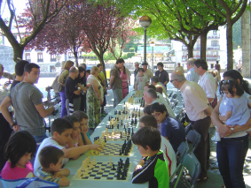

Agustin de Leitza Xake Elkartea |
| » hasiera » elkarteko bazkideak » taldekako txapelketa » azken txapelketak » antolatutako enkintzak » loturak |
San Juan-eko simultaneakBeste urte bat simultaenas ekitaldi bat burutu dugu San Joan festetan Goiko Plazan. Aurten ere eguraldia oso ona izan da eta nahiz eta eguzkia egon tenperatura oso ona izan da xakean ibiltzeko. Urte honetan Claudio izan da erantzukizuna hartu duena, eta berak eman du saioa, eta Iosu egon da ikusle.  Nahiz eta hasieran jendea pixka bat lotsati egon, goiza aurrera joan ahala jendea animatu da eta ekitaldiak arrakasta eduki du, bai parte hartzaile kopuruarengatik, bai ikusle anitzengatik. Claudioren jarduera nahiko ona izan dela esan daiteke, nahiz eta 3 partida galdu dituen.
|